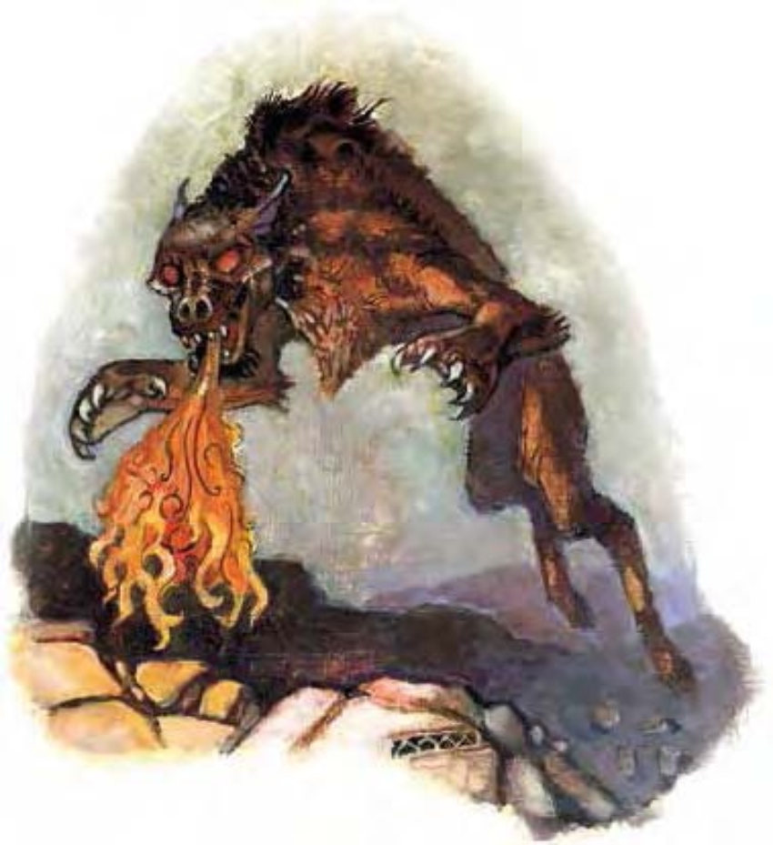

这种生物看起来像是一只强壮巨大、红褐色毛皮的狗，他身上的斑点、牙齿与舌头则呈煤黑色，还有一对火红的眼睛。
地狱犬是来自怨苦冥域的凶猛喷火犬怪。有些地狱犬被带到实体界来侍奉邪恶生物，其中也有许多在当地繁衍后代。
标准的地狱犬肩高4.5英尺，体重120磅。
地狱犬不会说话但能听懂炼狱语。
战斗地狱犬是优秀的狩猎者。他们最喜欢使用战术是先安静地包围猎物，再以一两只上前攻击，喷吐火焰把猎物逼向其他猎犬。如果猎物不逃跑，他们就会越来越靠近，对逃跑的猎物更是穷追不舍。
在计算伤害减免时，地狱犬的天生武器与持有武器都视为邪恶阵营与守序阵营。
喷吐攻击 (超自然)：10英尺锥状，每2d4轮可使用一次，造成2d6点火焰伤害，通过反射检定 (DC=13) 则伤害减半，豁免检定DC的调整值与体质调整值相同。
业火啮咬 (超自然)：如同炽焰武器，地狱犬每次啮咬可额外造成1d6点火焰伤害。
技能：地狱犬在进行“躲藏”与“潜行”检定时具有+5种族加值。
*地狱犬利用灵敏的嗅觉进行追踪时，“生存”检定具有+8种族加值。
九渊地狱的统治者、魔鬼之王们都眷养了众多的地狱犬。无间战犬诞生于地狱的最底层，无间地狱魔鬼宫殿之下的深狱业火，是地狱犬的一支可怕品种。无间战犬看起来像是漆黑的獒犬，体型近似役马，常披有炼狱炼甲衫。
除了以下特性，无间战犬各方面皆与地狱犬相同。
喷吐攻击 (超自然)：10英尺锥状，每2d4轮可使用一次，造成3d6点火焰伤害，通过反射检定 (DC=21) 则伤害减半，豁免检定DC的调整值与体质调整值相同。
业火啮咬 (超自然)：如同炽焰武器，地狱犬每次啮咬可额外造成1d8点火焰伤害。
| 资料栏位 | 地狱犬 | 无间战犬 |
|---|---|---|
| 生命骰 | 4d8+4 (22HP) | 12d8+60 (114HP) |
| 先攻 | +5 | +6 |
| 速度 | 40英尺 (8格) | 40英尺 (8格) |
| 防御等级 | 16 (+1敏捷、+5天生)、接触11、措手不及15 | 24 (-1体型、+2敏捷、+7天生、+6 “+2座骑用炼甲衫”)、接触11、措手不及22 |
| 基本攻击/擒抱 | +4 / +5 | +12 / +24 |
| 攻击 | 啮咬+5近战 (1d8+1附加1d6火焰) | 啮咬+20近战 (2d6+12 / 19-20附加1d8火焰) |
| 全力攻击 | 啮咬+5近战 (1d8+1附加1d6火焰) | 啮咬+20近战 (2d6+12 / 19-20附加1d8火焰) |
| 占据/触及 | 5英尺 / 5英尺 | 10英尺 / 10英尺 |
| 特殊攻击 | 喷吐攻击、业火啮咬 | 喷吐攻击、业火啮咬 |
| 特殊能力 | 黑暗视觉60英尺、对火焰免疫、灵敏嗅觉、易受寒冷伤害 | 黑暗视觉60英尺、对火焰免疫、灵敏嗅觉、易受寒冷伤害 |
| 豁免 | 强韧+5、反射+5、意志+4 | 强韧+13、反射+10、意志+9 |
| 属性 | 力量13、敏捷13、体质13、智力6、感知10、魅力6 | 力量26、敏捷14、体质20、智力4、感知12、魅力6 |
| 技能 | 躲藏+13、跳跃+12、聆听+7、潜行+13、侦察+7、生存+7* | 躲藏+17、跳跃+19、聆听+18、潜行+21、侦察+18、生存+8*、特技动作+3 |
| 专长 | 精通先攻、健跑、追踪B | 警觉、精通致命攻击 (啮咬)、精通先攻、追踪、专攻武器 (啮咬) |
| 环境 | 巴托九狱 | 巴托九狱 (无间地狱) |
| 组织 | 单独、成双或一批 (5-12) | 单独、成双或一批 (1-2，加上5-12个地狱犬) |
| 挑战级数 | 3 | 9 |
| 宝藏 | 无 | “+2座骑用炼甲衫” |
| 阵营 | 总是守序邪恶 | 总是守序邪恶 |
| 进化 | 5-8HD (中型)；9-12HD (大型) | 13-17HD (大型)；18-24HD (超大型) |
| 等级修正值 | +3 (部属) | +4 (部属) |